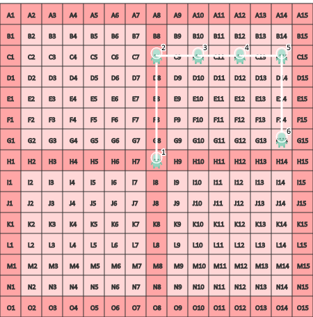
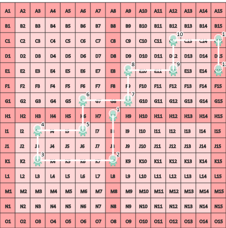
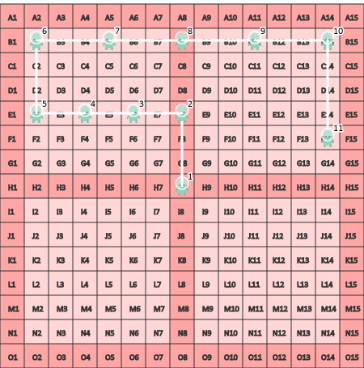
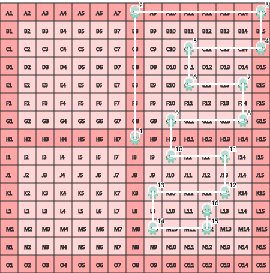

Les boucles bornées
🟥 1. Introduction¶
Souvent, dans un programme, il est nécessaire de répéter un certain nombre de fois une (ou des) instruction(s). Pour cela, on utilise ce qu'on appelle des boucles.
Les boucles bornées, qui nous intéressent ici sont utilisées si on connaît à l'avance le nombre de répétitions à effectuer.
Ces boucles bornées s'appellent également boucles pour ou boucles for.
📣 Il existe également les boucles non bornées qui sont utilisées dans le cas où on ne connaît pas à l'avance le nombre de répétitions à effectuer.
Exemple concret¶
[image non reprise dans cette copie]
Le nombre d'utilisateurs d'un nouveau réseau social est égal à 500 000 en janvier 2020. Ce nombre augmente de 5 % par mois, donc est multiplié par 1.05 chaque mois. Si on veut connaître le nombre d'utilisateurs 10 mois plus tard, il faut effectuer 10 fois de suite le même calcul (une multiplication par 1.05).
Au lieu d'écrire 10 lignes identiques il est préférable d'écrire une seule fois cette ligne et d'indiquer de l'exécuter 10 fois : pour cela, on utilise une boucle bornée.
En Python, au lieu d'écrire le programme
nb_utilisateurs = 500000
nb_utilisateurs = nb_utilisateurs * 1.05
nb_utilisateurs = nb_utilisateurs * 1.05
nb_utilisateurs = nb_utilisateurs * 1.05
nb_utilisateurs = nb_utilisateurs * 1.05
nb_utilisateurs = nb_utilisateurs * 1.05
nb_utilisateurs = nb_utilisateurs * 1.05
nb_utilisateurs = nb_utilisateurs * 1.05
nb_utilisateurs = nb_utilisateurs * 1.05
nb_utilisateurs = nb_utilisateurs * 1.05
nb_utilisateurs = nb_utilisateurs * 1.05
print(nb_utilisateurs) # pour voir la valeur finale
on écrirait celui-ci :
nb_utilisateurs = 500000
for indice in range(10):
nb_utilisateurs = nb_utilisateurs * 1.05
print(nb_utilisateurs) # pour voir la valeur finale
🟥 2. Construction d'une boucle bornée¶
Pour écrire une boucle bornée en Python on utilise le mot clé for. Les boucles bornées sont par conséquent très souvent appelées boucles for (ou boucles pour en français).
Le mot clé for peut s'utiliser de deux manières :
- avec la fonction
range(): pour itérer sur une liste d'entiers - seulement avec le mot-clé
in: pour itérer sur les éléments de certaines "variables"
mais nous nous concentrerons dans cette séance uniquement sur la première possibilité avec range()
📣 Nous aborderons l'autre possibilité (avec
in) dans des séances ultérieures consacrées à d'autres thèmes du programme.
La fonction range()¶
Avant d'écrire des boucles for, il est important de comprendre le rôle de la fonction range(). Cette fonction permet de générer une liste d'entiers. On distingue trois cas de figure (les deux premiers sont les plus importants) :
range(n): permet de générer n entiers, de 0 (inclus) à n exclu, c'est-à-dire : 0, 1, 2, 3, ..., n-1range(n, m): permet de générer m-n entiers, de n (inclus) à m exclu, c'est-à-dire : n, n+1, n+2, ..., m-1range(n, m, p): permet de générer les entiers de n (inclus) à m exclus mais avec un pas égal à p, c'est-à-dire : n, n+p, n+2p, ...
Exemples :
range(10)génère la liste d'entiers : 0, 1, 2, 3, 4, 5, 6, 7, 8, 9 (il y en a 10 en tout, de 0 inclus à 10 exclu).range(2, 10)génère la liste d'entiers : 2, 3, 4, 5, 6, 7, 8, 9 (de 2 inclus à 10 exclu).range(2, 10, 3)génère la liste d'entiers : 2, 5, 8 (de 2 inclus à 10 exclu mais en allant de 3 en 3).
On peut visualiser la liste d'entiers générés en utilisant list(), comme ci-dessous :
list(range(10))
list(range(2, 10))
list(range(2, 10, 3))
✏️ Exercice 0
Indiquez dans chaque cas la liste d'entiers générée par :
range(300)range(1, 13)range(50, 100)range(3, 19, 2)
N'hésitez pas à vérifier en utilisant la fonction
listcomme ci-dessus.
Boucles bornées avec la fonction range()¶
La syntaxe la plus simple d'une boucle for utilisant la fonction range() est la suivante.
for indice in range(n):
bloc_instructions
Et avec les deux autres cas d'utilisation de la fonction range() cela donne
for indice in range(n, m):
bloc_instructions
et
for indice in range(n, m, p):
bloc_instructions
Remarques :
- Il ne faut pas oublier le
:à la fin de la ligne avec la bouclebor - La fonction
rangepermet de générer une liste d'entiers comme vu précédemment. - La variable notée
indiceprendra successivement (à chaque tour de boucle) les valeurs des entiers générés par la fonctionrange. - Le bloc d'instructions à répéter doit être indenté (d'une tabulation) et sera donc ici exécuté autant de fois qu'il y a d'entiers générés par la fonction
range.
Si on reprend le code de l'exemple concret, l'instruction range(10) va générer une liste de 10 entiers : 0, 1, 2, ..., 9. La variable indice va prendre successivement ces dix valeurs et donc le bloc d'instructions dans la boucle for sera exécuté 10 fois. On peut visualiser cela :
from tutor import tutor # utile pour exécuter pas à pas le programme
nb_utilisateurs = 500000
for indice in range(10):
nb_utilisateurs = nb_utilisateurs * 1.05
tutor() # pour lancer la fenêtre interactive
🟥 3. À vous de jouer !¶
✏️ Exercice 1 : Un premier exemple
On considère le programme Python suivant.
a = 2
for i in range(4):
a = a + 1
a = 2 * a
✍️ Question 1 : Quel est le bloc d'instructions répété dans la boucle for ? Combien de fois est-il répété ?
✍️ Question 2 : Quelle est la valeur finale de la variable a ?
🐍 Question 3 : Recopiez ce programme dans la cellule ci-dessous en ajoutant la ligne permettant d'afficher a à la fin. Exécutez-le et vérifiez votre réponse à la question précédente.
# à vous de jouer !
✏️ Exercice 2 : Vérifier sa compréhension
Dans cet exercice on propose plusieurs questions pour vérifier votre compréhension des boucles for.
Il suffit d'exécuter chacune des cellules suivantes pour faire apparaître la question.
🐍 Question 1
from IPython.display import IFrame
IFrame('https://www.codepuzzle.io/IDNF6L', width='100%', height=750)
🐍 Question 2
from IPython.display import IFrame
IFrame('https://www.codepuzzle.io/IDKFE2', width='100%', height=750)
✏️ Exercice 3 : Dessiner des figures
Le module turtle (tortue) permet de dessiner avec Python.
Dans cet exercice on a écrit une fonction carre qui permet de dessiner un carré :
from turtle import *
def carre():
forward(100)
left(90)
forward(100)
left(90)
forward(100)
left(90)
forward(100)
left(90)
carre() # appel à la fonction pour tracer le carré
done() # pour lancer l'animation
🐍 Question 2 : Vous avez dû constater que l'on doit répéter plusieurs fois les mêmes instructions. Recopiez et modifiez le code de la fonction carre pour dessiner le carré en utilisant une boucle for (et ainsi réduire le nombre de lignes écrites).
# à vous de jouer !
🐍 Question 3 : Créez une fonction triangle qui construit un triangle en utilisant une boucle for.
# à vous de jouer !
🐍 Question 4 : Modifiez les fonctions carre et triangle pour qu'elles aient désormais un paramètre appelé cote qui correspond à la longueur d'un côté de la figure.
Par exemple,
- l'appel
carre(50)doit construire un carré de côté 50 - l'appel
carre(100)doit construire un carré de côté 100 - l'appel
triangle(80)doit construire un triangle de côté 80
# à vous de jouer !
✏️ Exercice 4 : Réseau social
[image non reprise dans cette copie]
Un réseau social possédait 25 000 utilisateurs en 2021. Sa popularité est telle que l'on estime que son nombre d'utilisateurs va doubler tous les ans.
La fonction users (signifie utilisateurs en anglais), qui n'a pas de paramètre, doit renvoyer le nombre d'utilisateurs u du réseau social en 2025.
🐍 Question 1 : Remplacez les ... par les bonnes instructions dans le code de la fonction users.
# à vous de jouer !
def users():
u = 25000
for i in range(...):
u = ...
return ...
🐍 Question 2 : Après avoir exécuté le code précédent, appelez cette fonction pour connaître le nombre d'utilisateurs en 2025. (Vous pouvez vérifier en faisant le calcul vous-même).
# à vous de jouer !
🐍 Question 3 : Quelle modification faut-il faire dans ce code pour connaître le nombre d'utilisateurs en 2030 ? Faites-le. Combien vaut-il ?
# à vous de jouer !
# à vous de jouer !
🐍 Question 4 (plus difficile) : Modifiez la fonction users pour qu'elle ait un paramètre annee et renvoie le nombre d'utilisateurs l'année annee.
Par exemple, l'appel users(2030) doit renvoyer le nombre estimé d'utilisateurs en 2030.
# à vous de jouer !
✏️ Exercice 5 : Alien Python - Dessiner un parcours
📣 Pour les questions de cet exercice, exécutez le programme donné puis dessinez le parcours de l'alien en cliquant sur les différentes positions parcourues. Vous pouvez annuler la dernière position en cliquant dessus.
⚠️ N'oubliez pas d'exécuter la cellule ci-dessous avant de poursuivre ! ⚠️
from alien_python import *
🐍 Question 1
centrer_alien() # l'alien est au départ en case H8
for loop in range(5) :
gauche()
for loop in range(5) :
haut()
dessiner_parcours()
🐍 Question 2
centrer_alien()
for loop in range(5) :
gauche()
haut()
dessiner_parcours()
🐍 Question 3
centrer_alien()
bas(6)
droite(6)
for loop in range(4) :
haut(3)
gauche(2)
bas(5)
dessiner_parcours()
🐍 Question 4
centrer_alien()
n = 2
a = 3
gauche(a)
bas(2*a)
for i in range(n):
droite(3)
haut(a)
a = a - 1
dessiner_parcours()
🐍 Question 5
centrer_alien()
a = 2
b = 5
c = b - a
d = 1
gauche()
for loop in range(c) :
d = d + 1
haut()
haut()
droite()
droite()
for loop in range(d) :
bas()
dessiner_parcours()
✏️ Exercice 6 : Alien Python - Compléter un programme
📣 Pour les questions de cet exercice, complétez chaque programme en remplaçant les pointillés par les bonnes valeurs afin d'obtenir le déplacement donné. Puis exécutez le programme pour vérifier s'il est correct.
⚠️ N'oubliez pas d'exécuter la cellule ci-dessous avant de poursuivre ! ⚠️
from alien_python import *
🐍 Question 1
Voici le déplacement à obtenir (les numéros correspondent aux différentes étapes) :

centrer_alien()
haut(...)
for loop in range(...) :
droite(...)
bas(...)
verifier_programme(['H8', 'C8', 'C10', 'C12', 'C14', 'G14'])
🐍 Question 2
Voici le déplacement à obtenir (les numéros correspondent aux différentes étapes) :

centrer_alien()
bas(...)
gauche(...)
for loop in range(...) :
haut(...)
droite(...)
bas(...)
verifier_programme(['H8', 'K8', 'K3', 'I3', 'I6', 'G6', 'G9', 'E9', 'E12', 'C12', 'C15', 'E15'])
🐍 Question 3
Voici le déplacement à obtenir (les numéros correspondent aux différentes étapes) :

centrer_alien()
haut(...)
...
gauche(...)
haut(...)
...
droite(...)
bas(...)
verifier_programme(['H8', 'E8', 'E6', 'E4', 'E2', 'B2', 'B5', 'B8', 'B11', 'B14', 'F14'])
🐍 Question 4
Voici le déplacement à obtenir (les numéros correspondent aux différentes étapes) :

centrer_alien()
...
droite(...)
for loop in range(...) :
bas(...)
gauche(...)
...
droite(...)
haut(...)
verifier_programme(['H8', 'A8', 'A15', 'C15', 'C11', 'E11', 'E14', 'G14', 'G10', 'I10', 'I13', 'K13', 'K9', 'M9', 'M12', 'L12'])
Références :
- Les questions de l'exercice 6 ont été proposées par Stéphan Grignon, du lycée Théodore Deck, GUEBWILLER.
Les enseignants de SNT du lycée Emmanuel Mounier, ANGERS